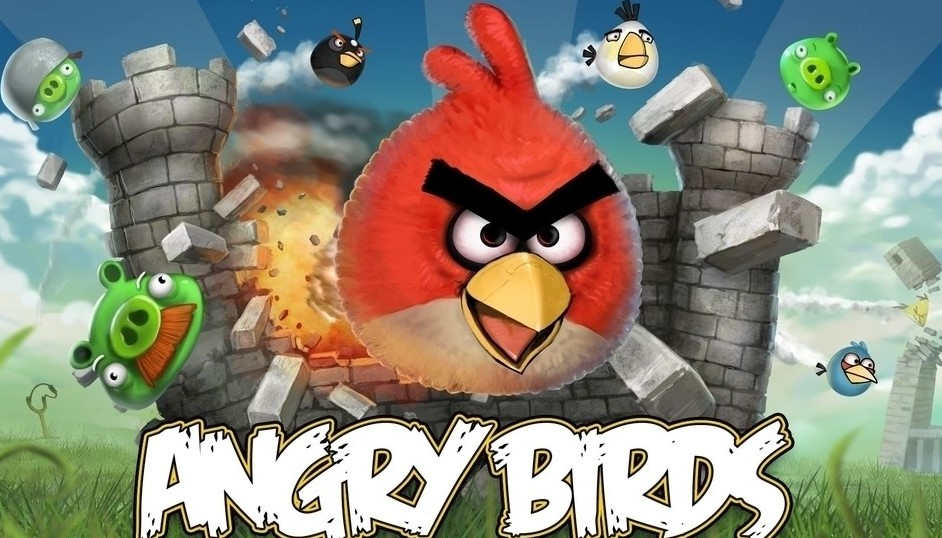
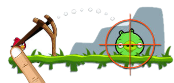
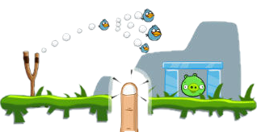
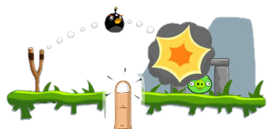
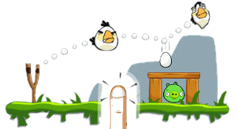
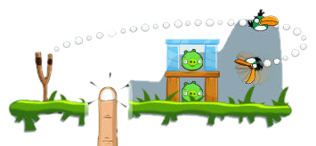

Angry birds is a 2009 casual puzzle video game developed by Rovio Entertainment. Inspired primarily by a sketch of
stylized wingless birds, the game was first released for iOS and Maemo devices starting in December 2009.Since that time,
over 12 million copies of the game have been purchased from the iOS App Store, which prompted the developer to design
versions for other touchscreen-based smartphones, most notably Android, Symbian, Windows Phone, and BlackBerry 10
devices.

In Angry Birds, the player controls a flock of multi-colored birds that are attempting to retrieve their eggs, which have
been stolen by a group of hungry green pigs. In each stage of the gameplay, enemy pigs are sheltered by structures made
of various materials such as wood, glass, and stone resembling children's toy building blocks. The objective of the game
is to eliminate all the pigs on the level. Using a slingshot, players launch a limited set of birds with the goal of either
striking the enemy pigs directly or damaging their surrounding structures, causing the blocks to collapse and pop the pigs.
The player must set the angle and force of the bird's travel by pulling back on the slingshot (using intuitive
touch-controls in the mobile versions). The launch process is quick and casual, with no visible trajectory data, and a
player simply selects a point in the X-Y field behind the launch post from which the virtual slingshot will be released.
| Character | Description | Photo |
|
Small in size, light in weight and weak in attack, it can be used for two times in the air to issue an air wave attack,
which can destroy green pigs when rolling. Good for ice and wood, weak for rocks.
|
 | |
|
Small size, light weight, special effects for acceleration, weak attack before use, medium attack after use. Strong against
wood, weak against ice and stone.
|

|
|
|
Very small, light, weak attack, can become three. Stronger against ice, weaker against wood and stone.
|
 | |
|
Large, heavy, will explode, impact force, explosive force, medium air wave. Good for attacking rocks.
|
 | |
|
Big and heavy, it can drop a fried egg down, while the white bird shrinks and bounches away. Impact force is weak,
"fried eggs" explosive force medium, big air, use your body to attack wooden boards and ice, dropping vertically
until you can't hit any more.
|
 | |
|
Large and light, it can swing like a boomerang and is suitable for attacking enemies behind buildings
|
 |